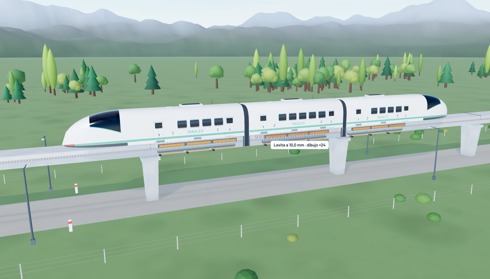
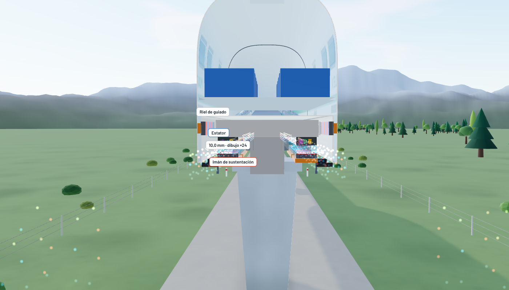
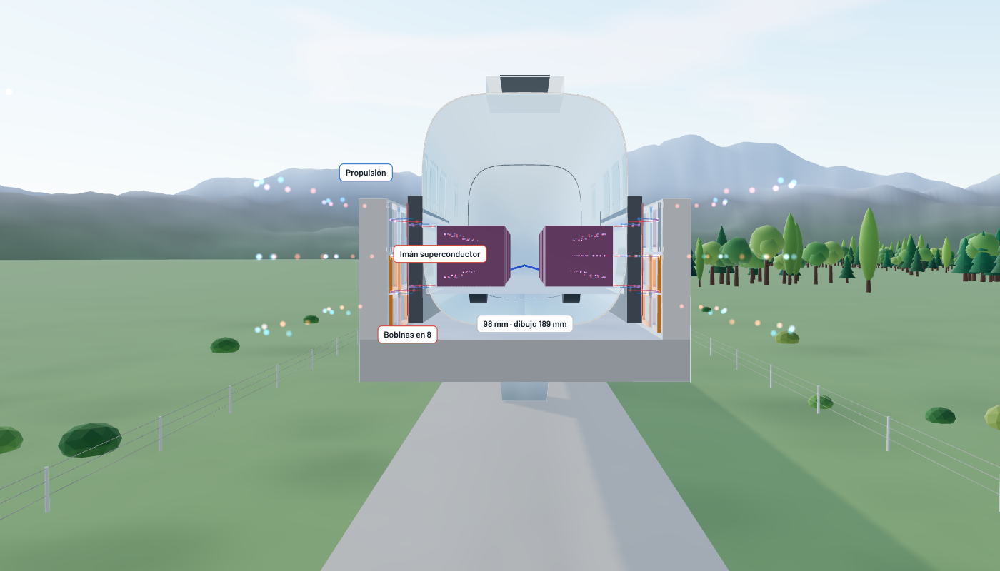
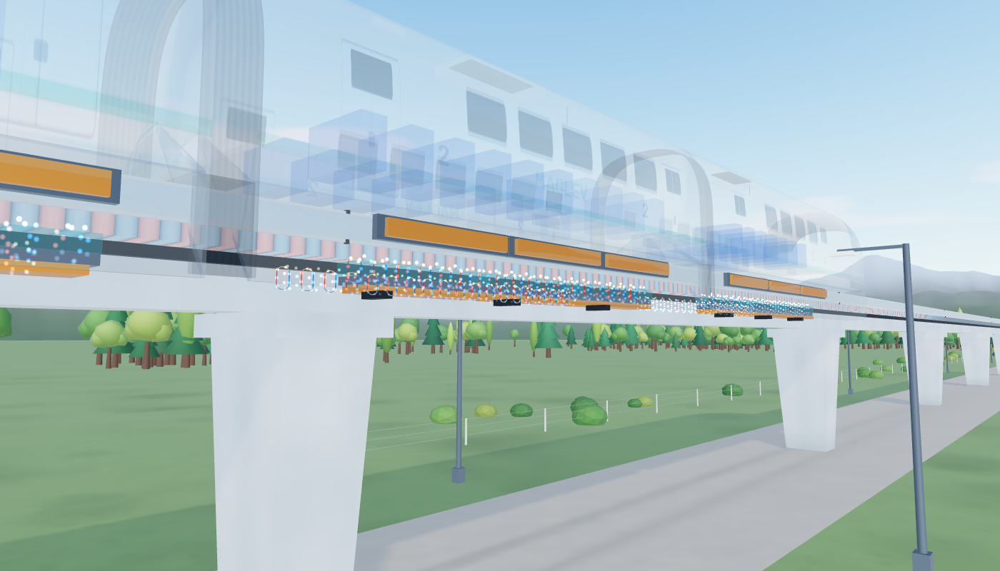
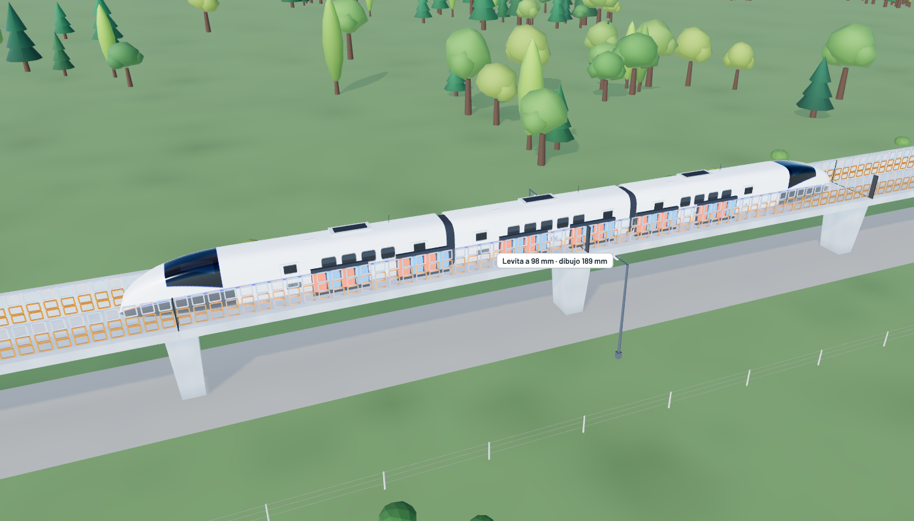
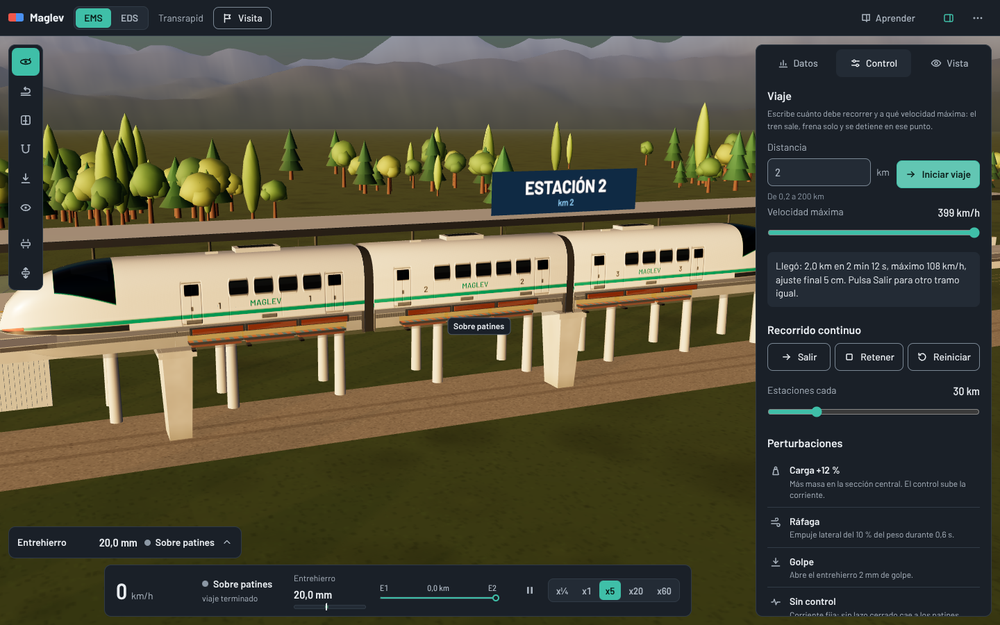

Montaje, materiales, herramientas y modelo analizado.
Un tren maglev (de magnetic levitation, levitación magnética) no tiene ruedas que toquen la vía cuando va rápido. Unos imanes lo mantienen flotando a pocos milímetros o centímetros del riel y otros lo empujan hacia adelante. Sin rozamiento de ruedas puede superar los 500 km/h con poco ruido y poco desgaste. Hay dos maneras de lograrlo, y el proyecto simula las dos con el mismo tren para poder compararlas:
En los dos casos el empuje lo da un motor lineal síncrono: es como un motor eléctrico común "desenrollado" a lo largo de la vía. Una onda magnética viaja por el riel y arrastra al tren a su misma velocidad.
No hay un montaje físico de laboratorio: el "banco de ensayo" es un modelo digital. Consta de tres piezas que trabajan juntas:
| Herramienta | Para qué se usó |
|---|---|
| Blender (3.x / 4.x) y Python | Modelado del tren y la vía a escala 1:1, revisión de holguras y exportación del modelo (.obj). |
| JavaScript y Three.js (WebGL) | Dibujo en 3D dentro del navegador, a unos 60 imágenes por segundo. |
| Vite | Servidor de desarrollo y empaquetado final de la aplicación. |
| Vitest | Pruebas automáticas que verifican que la física se comporta como se espera. |
| Playwright y Chromium | Capturas y revisiones automáticas de la interfaz y de la imagen. |
| Git y GitHub | Control de versiones: cada cambio queda registrado y se puede revisar. |


Procedimientos, parámetros, procesamiento de datos y métricas de evaluación.
El trabajo avanzó en cinco etapas. Cada una entrega algo que usa la siguiente, y las pruebas devuelven al principio cuando algo no cuadra:

No todos los números salen de un documento. Para ser honestos, cada valor lleva una etiqueta: fuente es un dato publicado, derivado se calculó a partir de datos publicados e elegido lo fijamos nosotros para que el modelo funcione o para que se vea bien en pantalla.
| Parámetro | EMS | EDS | Origen |
|---|---|---|---|
| Separación imán y riel en marcha | 10 mm | 100 mm | fuente |
| Velocidad máxima | 399 km/h | 603 km/h (récord 2015) | derivado / fuente |
| Paso de las bobinas del motor | 258 mm | 0,9 m | fuente / elegido |
| Masa por sección | 60 t | 25 t | derivado / elegido |
| Largo por sección (3 secciones) | 14 m | 14 m | elegido |
| Velocidad para dejar las ruedas | no usa ruedas | 150 km/h | fuente |
| Corriente de los imanes | 50 A (control) | 700 kA (superconductor) | elegido / fuente |
El largo real de una sección del Transrapid es de unos 27 m. Se acortó a 14 m para que el tren completo quepa en la pantalla, sin cambiar su masa.
Los datos no se miden con sensores: los genera el simulador. El ciclo es el mismo todo el tiempo:
Para decidir si el simulador "funciona bien" se fijaron criterios medibles, que se revisan solos cada vez que se cambia el código:
| Criterio | Cómo se comprueba | Resultado |
|---|---|---|
| El EMS mantiene 10 mm en marcha | Prueba automática de un viaje completo | dentro de ±0,5 mm |
| Sin control, el EMS cae (inestable) | Se quita el control y se da un pequeño empujón | pierde el equilibrio, como el real |
| El EDS despega solo por encima de ~150 km/h | Prueba de velocidad de despegue | cumple |
| El tren se detiene donde se pidió | Viajes de 0,5 a 40 km en los dos modos | a menos de 1,5 m |
| La energía cuadra | Trabajo del motor frente a pérdidas | cumple |
| La imagen no parpadea ni se corta | Revisión visual automática con capturas | cumple |
| Total de pruebas automáticas | Vitest, en cada cambio | 216 de 216 aprobadas |
Lo que muestra la simulación terminada.

La docente sugirió poder indicar la distancia y que el tren se detenga ahí. La Tabla 4 resume varios viajes hechos con el simulador. La velocidad máxima pedida es un límite: en trayectos cortos el tren no alcanza a llegar a ella porque debe empezar a frenar antes.
| Modo | Distancia | Velocidad pedida | Tiempo | Velocidad alcanzada | Ajuste final |
|---|---|---|---|---|---|
| EMS | 1 km | 400 km/h (máx. 399) | 1 min 35 s | 75 km/h | 5 cm |
| EMS | 5 km | 250 km/h | 3 min 21 s | 178 km/h | 5 cm |
| EMS | 20 km | 400 km/h (máx. 399) | 6 min 52 s | 343 km/h | 5 cm |
| EMS | 60 km | 600 km/h (máx. 399) | 12 min 57 s | 399 km/h | 5 cm |
| EDS | 1 km | 400 km/h | 1 min 11 s | 96 km/h | 5 cm |
| EDS | 5 km | 250 km/h | 2 min 38 s | 222 km/h | 5 cm |
| EDS | 20 km | 400 km/h | 5 min 19 s | 400 km/h | 5 cm |
| EDS | 60 km | 600 km/h | 9 min 29 s | 600 km/h | 5 cm |

Los tiempos son de tiempo simulado. En la aplicación se pueden ver más rápido (x5, x20, x60) o en cámara lenta (x¼).